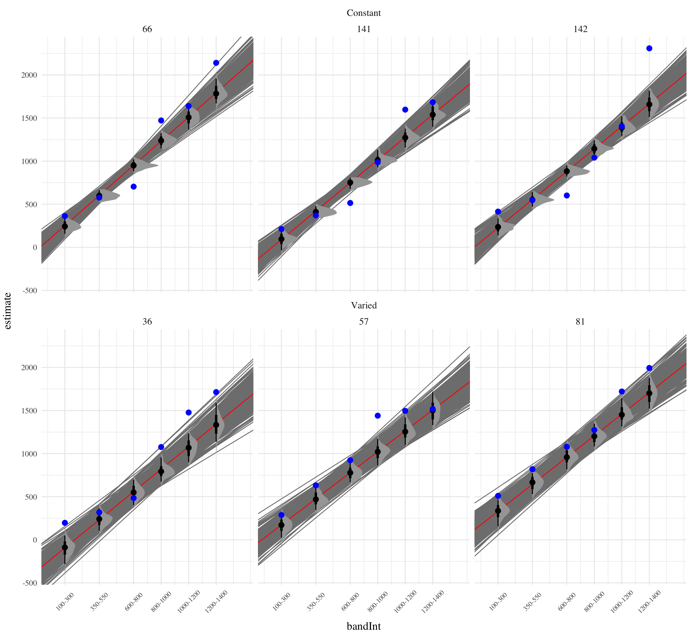
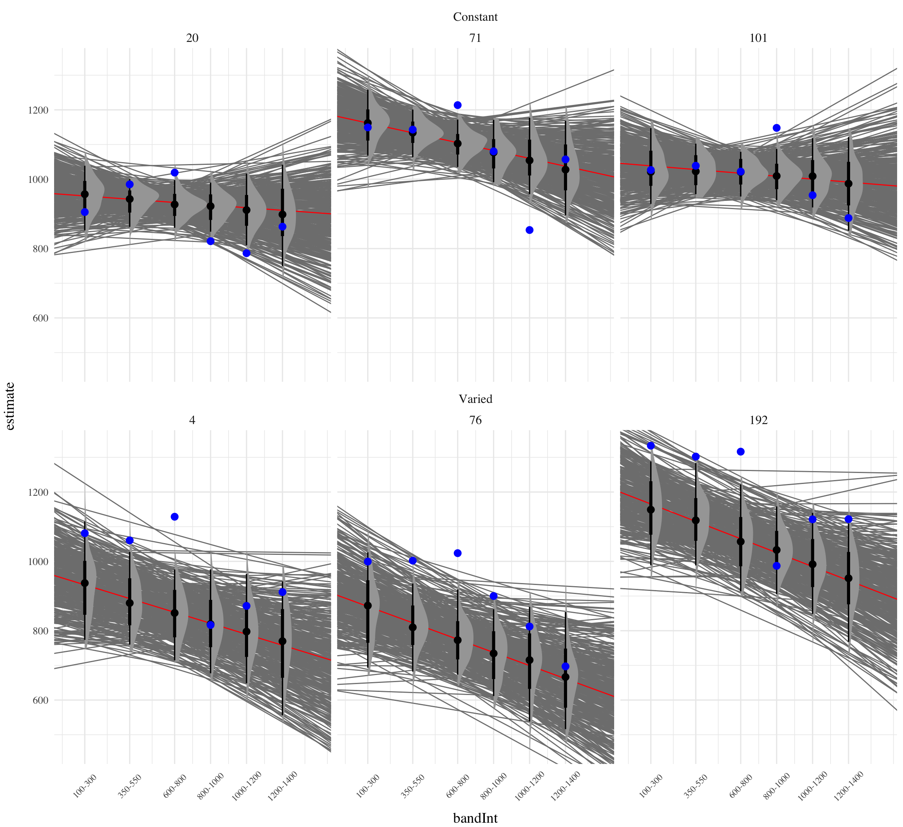

| Type | Parameter | Term | Description |
|---|---|---|---|
| Population-Level Effects | \(\beta_0\) | (Intercept) |
Intercept representing the baseline deviation |
| Population-Level Effects | \(\beta_1\) | conditVaried |
Effect of condition (Varied vs. Constant) on deviation |
| Population-Level Effects | \(\beta_2\) | bandInt |
Effect of target velocity band (bandInt) on deviation |
| Population-Level Effects | \(\beta_3\) | conditVaried:bandInt |
Interaction effect between training condition and target velocity band on deviation |
| Group-Level Effects | \(\sigma_{\text{Intercept}}\) | sd__(Intercept) |
Standard deviation for (Intercept) |
| Group-Level Effects | \(\sigma_{\text{bandInt}}\) | sd__bandInt |
Standard deviation for bandInt |
| Family Specific Parameters | \(\sigma_{\text{Observation}}\) | sd__Observation |
Standard deviation for Gaussian Family |
HTW E1 Testing
Analysis
R
Bayesian
Analyses Strategy
All data processing and statistical analyses were performed in R version 4.31 Team (2020). To assess differences between groups, we used Bayesian Mixed Effects Regression. Model fitting was performed with the brms package in R Bürkner (2017), and descriptive stats and tables were extracted with the BayestestR package Makowski et al. (2019). Mixed effects regression enables us to take advantage of partial pooling, simultaneously estimating parameters at the individual and group level. Our use of Bayesian, rather than frequentist methods allows us to directly quantify the uncertainty in our parameter estimates, as well as circumventing convergence issues common to the frequentist analogues of our mixed models. For each model, we report the median values of the posterior distribution, and 95% credible intervals.
Each model was set to run with 4 chains, 5000 iterations per chain, with the first 2500 of which were discarded as warmup chains. Rhat values were generally within an acceptable range, with values <=1.02 (see appendix for diagnostic plots). We used uninformative priors for the fixed effects of the model (condition and velocity band), and weakly informative Student T distributions for for the random effects.
We compared varied and constant performance across two measures, deviation and discrimination. Deviation was quantified as the absolute deviation from the nearest boundary of the velocity band, or set to 0 if the throw velocity fell anywhere inside the target band. Thus, when the target band was 600-800, throws of 400, 650, and 1100 would result in deviation values of 200, 0, and 300, respectively. Discrimination was measured by fitting a linear model to the testing throws of each subjects, with the lower end of the target velocity band as the predicted variable, and the x velocity produced by the participants as the predictor variable. Participants who reliably discriminated between velocity bands tended to have positive slopes with values ~1, while participants who made throws irrespective of the current target band would have slopes ~0.
Results
Testing Phase - No feedback.
In the first part of the testing phase, participants are tested from each of the velocity bands, and receive no feedback after each throw.
Deviation From Target Band
Descriptive summaries testing deviation data are provided in Table 2 and Figure 1. To model differences in accuracy between groups, we used Bayesian mixed effects regression models to the trial level data from the testing phase. The primary model predicted the absolute deviation from the target velocity band (dist) as a function of training condition (condit), target velocity band (band), and their interaction, with random intercepts and slopes for each participant (id).
\[\begin{equation} dist_{ij} = \beta_0 + \beta_1 \cdot condit_{ij} + \beta_2 \cdot band_{ij} + \beta_3 \cdot condit_{ij} \cdot band_{ij} + b_{0i} + b_{1i} \cdot band_{ij} + \epsilon_{ij} \end{equation}\]| Band | Band Type | Mean | Median | Sd |
|---|---|---|---|---|
| 100-300 | Extrapolation | 254 | 148 | 298 |
| 350-550 | Extrapolation | 191 | 110 | 229 |
| 600-800 | Extrapolation | 150 | 84 | 184 |
| 800-1000 | Trained | 184 | 106 | 242 |
| 1000-1200 | Extrapolation | 233 | 157 | 282 |
| 1200-1400 | Extrapolation | 287 | 214 | 290 |
| Band | Band Type | Mean | Median | Sd |
|---|---|---|---|---|
| 100-300 | Extrapolation | 386 | 233 | 426 |
| 350-550 | Extrapolation | 285 | 149 | 340 |
| 600-800 | Extrapolation | 234 | 144 | 270 |
| 800-1000 | Trained | 221 | 149 | 248 |
| 1000-1200 | Trained | 208 | 142 | 226 |
| 1200-1400 | Trained | 242 | 182 | 235 |

| Term | Estimate | 95% CrI Lower | 95% CrI Upper | pd |
|---|---|---|---|---|
| Intercept | 205.09 | 136.86 | 274.06 | 1.00 |
| conditVaried | 157.44 | 60.53 | 254.90 | 1.00 |
| Band | 0.01 | -0.07 | 0.08 | 0.57 |
| condit*Band | -0.16 | -0.26 | -0.06 | 1.00 |
| contrast | Band | value | lower | upper | pd |
|---|---|---|---|---|---|
| Constant - Varied | 100 | -141.49 | -229.19 | -53.83 | 1.00 |
| Constant - Varied | 350 | -101.79 | -165.62 | -36.32 | 1.00 |
| Constant - Varied | 600 | -62.02 | -106.21 | -14.77 | 1.00 |
| Constant - Varied | 800 | -30.11 | -65.08 | 6.98 | 0.94 |
| Constant - Varied | 1000 | 2.05 | -33.46 | 38.41 | 0.54 |
| Constant - Varied | 1200 | 33.96 | -11.94 | 81.01 | 0.92 |
The model predicting absolute deviation (dist) showed clear effects of both training condition and target velocity band (Table X). Overall, the varied training group showed a larger deviation relative to the constant training group (β = 157.44, 95% CI [60.53, 254.9]). Deviation also depended on target velocity band, with lower bands showing less deviation. See Table 3 for full model output.

Discrimination between bands
In addition to accuracy/deviation, we also assessed the ability of participants to reliably discriminate between the velocity bands (i.e. responding differently when prompted for band 600-800 than when prompted for band 150-350). Table 4 shows descriptive statistics of this measure, and Figure 1 visualizes the full distributions of throws for each combination of condition and velocity band. To quantify discrimination, we again fit Bayesian Mixed Models as above, but this time the dependent variable was the raw x velocity generated by participants on each testing trial.
\[\begin{equation} vx_{ij} = \beta_0 + \beta_1 \cdot condit_{ij} + \beta_2 \cdot bandInt_{ij} + \beta_3 \cdot condit_{ij} \cdot bandInt_{ij} + b_{0i} + b_{1i} \cdot bandInt_{ij} + \epsilon_{ij} \end{equation}\]
| Band | Band Type | Mean | Median | Sd |
|---|---|---|---|---|
| 100-300 | Extrapolation | 524 | 448 | 327 |
| 350-550 | Extrapolation | 659 | 624 | 303 |
| 600-800 | Extrapolation | 770 | 724 | 300 |
| 800-1000 | Trained | 1001 | 940 | 357 |
| 1000-1200 | Extrapolation | 1167 | 1104 | 430 |
| 1200-1400 | Extrapolation | 1283 | 1225 | 483 |
| Band | Band Type | Mean | Median | Sd |
|---|---|---|---|---|
| 100-300 | Extrapolation | 664 | 533 | 448 |
| 350-550 | Extrapolation | 768 | 677 | 402 |
| 600-800 | Extrapolation | 876 | 813 | 390 |
| 800-1000 | Trained | 1064 | 1029 | 370 |
| 1000-1200 | Trained | 1180 | 1179 | 372 |
| 1200-1400 | Trained | 1265 | 1249 | 412 |
| Term | Estimate | 95% CrI Lower | 95% CrI Upper | pd |
|---|---|---|---|---|
| Intercept | 408.55 | 327.00 | 490.61 | 1.00 |
| conditVaried | 164.05 | 45.50 | 278.85 | 1.00 |
| Band | 0.71 | 0.62 | 0.80 | 1.00 |
| condit*Band | -0.14 | -0.26 | -0.01 | 0.98 |
| Term | Estimate | 95% CrI Lower | 95% CrI Upper | pd |
|---|---|---|---|---|
| Intercept | 497.49 | 431.26 | 566.17 | 1.00 |
| conditVaried | 124.79 | 26.61 | 224.75 | 0.99 |
| Band | 0.49 | 0.42 | 0.56 | 1.00 |
| condit*Band | -0.06 | -0.16 | 0.04 | 0.88 |
See Table 5 for the full model results. The estimated coefficient for training condition (β = 164.05, 95% CrI [45.5, 278.85]) suggests that the varied group tends to produce harder throws than the constant group, but is not in and of itself useful for assessing discrimination. Most relevant to the issue of discrimination is the slope on Velocity Band (β = 0.71, 95% CrI [0.62, 0.8]). Although the median slope does fall underneath the ideal of value of 1, the fact that the 95% credible interval does not contain 0 provides strong evidence that participants exhibited some discrimination between bands. The estimate for the interaction between slope and condition (β = -0.14, 95% CrI [-0.26, -0.01]), suggests that the discrimination was somewhat modulated by training condition, with the varied participants showing less sensitivity between bands than the constant condition. This difference is depicted visually in Figure 4. Table 6 shows the average slope coefficients for varied and constant participants separately for each quartile. The constant participant participants appear to have larger slopes across quartiles, but the difference between conditions may be less pronounced for the top quartiles of subjects who show the strongest discrimination. Figure Figure 5 shows the distributions of slope values for each participant, and the compares the probability density of slope coefficients between training conditions. Figure 6
The second model, which focused solely on extrapolation bands, revealed similar patterns. The Velocity Band term (β = 0.49, 95% CrI [0.42, 0.56]) still demonstrates a high degree of discrimination ability. However, the posterior distribution for interaction term (β = -0.06, 95% CrI [-0.16, 0.04] ) does across over 0, suggesting that the evidence for decreased discrimination ability for the varied participants is not as strong when considering only the three extrapolation bands.


| Condition | Q_0%_mean | Q_25%_mean | Q_50%_mean | Q_75%_mean | Q_100%_mean |
|---|---|---|---|---|---|
| Constant | -0.1055375 | 0.4793348 | 0.6889330 | 0.9307559 | 1.398348 |
| Varied | -0.2011397 | 0.2687056 | 0.5900128 | 0.9016936 | 1.299947 |
Figure 5 shows the distributions of estimated slopes relating velocity band to x velocity for each participant, ordered from lowest to highest within condition. Slope values are lower overall for varied training compared to constant training. Figure Xb plots the density of these slopes for each condition. The distribution for varied training has more mass at lower values than the constant training distribution. Both figures illustrate the model’s estimate that varied training resulted in less discrimination between velocity bands, evidenced by lower slopes on average.




E1 Results Discussion
NEEDS TO BE WRITTEN
References
Bürkner, P.-C. (2017). Brms: An R Package for Bayesian Multilevel Models Using Stan. Journal of Statistical Software, 80, 1–28. https://doi.org/10.18637/jss.v080.i01
Makowski, D., Ben-Shachar, M. S., & Lüdecke, D. (2019). bayestestR: Describing Effects and their Uncertainty, Existence and Significance within the Bayesian Framework. Journal of Open Source Software, 4(40), 1541. https://doi.org/10.21105/joss.01541
Team, R. C. (2020). R: A Language and Environment for Statistical Computing. R: A Language and Environment for Statistical Computing.